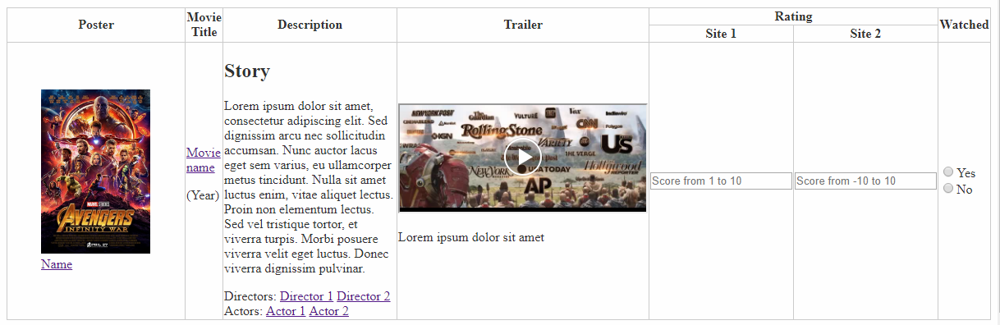

- Направете таблица със
седем колони;
- В header-a на таблицата да има една колона, която се разделя на 2 подколони;
- Първата колона трябва да съдържа изображение(снимка) и заглавие към нея като и двете да бъдат линк към статия
в интернет;
снимките може да бъдат свалени при вас или линкове към изображения в интернет;
- Втората колона съдържа име, което също е линк;
- Третата колона трябва да съдържа:
- Заглавие;
- Текст - един или повече параграфи;
- Малко заглавие и изброяване на 2 или повече линка;
- Малко заглавие и Изброяване на други 2 или повече линка.
- Четвъртата колона трябва да съдържа embeded video
от Youtube или друг сайт, под или около клипа ще видите опция за споделяне
Вграждане на български или embeded на английски, click на тази опция в youtube ви води до:

копирайте iframe таг-а който ви е представен и го поставете в клетката.
под него сложете кратко описание;
-
Пета колона трябва да съдържа дропдаун (select) с опции за оценка от 1 до 10
-
Шеста колона трябва да съдържа поле за въвеждане с ограничения от -10 до 10 със стъпка 1
-
Седма колона трябва да съдържа инпут за радиобутони с две или повече опции
-
NB! Направете три подобни реда с различно съдържание
Може да използвате каквито и да решите ресурси, аз съм направил примера по-долу за филм
но имате свободата да използвате каквато желаете тематика
За базово стилизиране на таблицата може да използвате стиловете в head-a на този файл.
Също така сте свободни да добавяте стилове по ваше усмотрение - за големина на клетките, снимките и тн.
Крайната ни цел е нещо подобно на снимката по-долу:
